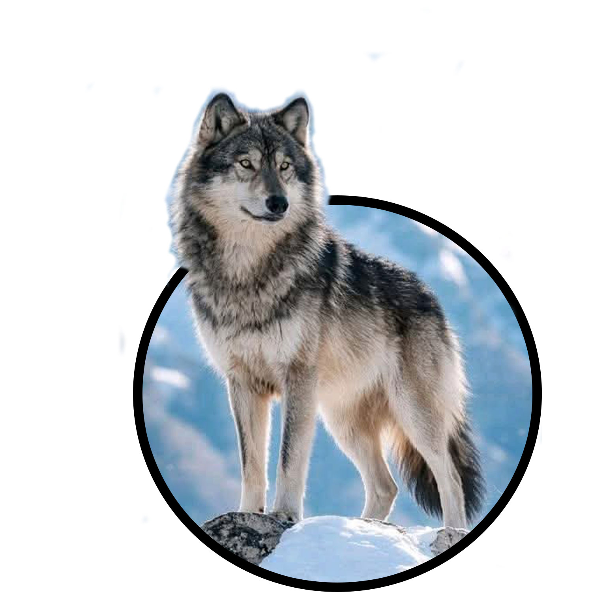

About This Lesson
Create an event poster with a title, date, venue, visual focus, and readable information hierarchy. The steps below use common Photoshop tools and panels; labels may vary slightly by version.

Learning Objectives
After completing this lesson, learners should be able to:
- Design an event poster
- Organize event information
- Create a readable and balanced layout
Step-by-Step Instructions
-
Step 1
Open AdobePhotoshop
-
Step 2
Createe a new document
-
Step 3
Create a shape using ellipse tool
-
Step 4
Drag the image
-
Step 5
Create the Clipping Mask
-
Step 6
Adjust the image
-
Step 7
Add more design elements in blending options
Video 8
Practical Activity
Place the image inside a shape or text using the clipping mask feature.